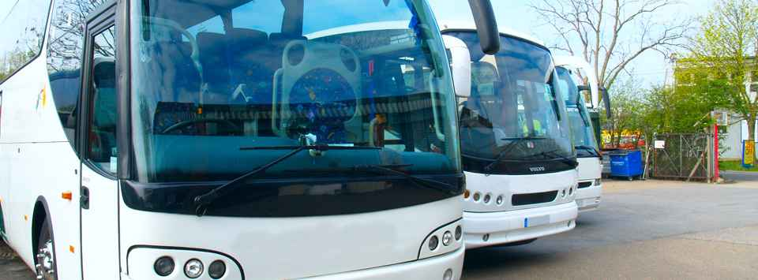

Travel info
How to get there
The excellent location of Málaga Province and Costa del Sol, plus the effective road infrastructure make it easy to access them by air, by road, by sea or by rail.
AIR
-

Malaga’s "Pablo Ruiz Picasso" International Airport is the fourth-largest in Spain in terms of both air traffic (after those of the holiday resort of Majorca and the two great metropolises, Madrid and Barcelona) and number of passengers (almost ten million per year). It can handle 500 flights per day and enjoys direct links with over 60 destinations worldwide, including most of Europe’s main capitals and major cities such as New York.
The airport is just 8 kilometres from the city and enjoys excellent communications with the rest of the Costa del Sol. The incessant growth of tourist demand has seen the airport obliged to plan further expansion in the shape of a large new terminal, a second runway and a new control tower.
-
Pablo Ruiz Picasso Málaga Airport
Address: Avenida García Morato s/n, 29004, Málaga
Telephone: 902 404 704
Email: infoagp@e-externas.aena.es
Web: www.aena.es
TRAIN
-

The Railway Network is also becoming a key means of transport to the city. In addition to the existing lines which link Malaga with the whole of Andalusia and the rest of Spain. The AVE (Spanish High Speed train) which has arrived to Malaga in December 2007, enables passengers to reach Madrid in just two and a half hours and provides faster connections to other cities such as Barcelona, Zaragoza, Cordoba and Sevilla. At this moment we have 22 trains per day.
Part of the new infrastructure is the new train station, Vialia, which is both spacious and modern and it is not only used for travel purposes but is also the site of a leisure complex that includes a 4 stars hotel.
The Vialia-María Zambrano central station is on La Estación Ave., in the heart of Málaga City, only a 10 minutes' walk to downtown Málaga. The station serves the airport via the C-1 line and is located only 2km from the Port of Málaga.
-
Málaga-María Zambrano Train Station (ADIF)
Address: Explanada de la Estación s/n, 29002, Málaga
Telephone: 902 24 02 02
Telephone for the Disabled: 952 36 02 02
Left luggage office opening hours: 06:00 to 23:30
Bus routes: 1, 3, 4, 10, 16, 19, 24, 27, Circular 1 and Circular 2
Distance from airport: 9 km
Distance from port: 2 km
PORT
-
The Port of Malaga handles a huge volume of both commercial and cruise traffic, making it one of the main and most dynamic gateways to the city. It is currently the second most important cruise port in the Iberian Peninsula, with such eminent vessels as the ‘Queen Mary II’ and the ‘Millennium’ having docked in the city. All of this is largely due to the extension of the eastern breakwater, which is now 1,200 metres long.
The breakwater offers a docking area 635 metres in length and 20 metres deep.
When the extension work is fully completed, the harbour will boast an area of 42 hectares, thus consolidating its status as a frontier of the European Union and a gateway for merchandise between North Africa and Europe. The plan will see the harbour integrated into the city itself to a much greater degree than before, with the creation of new areas devoted to commerce, leisure and relaxation. As a result, cruise passengers willbe able to take advantage of the infrastructure that Malaga has to offer: the airport, a wealth of historical and cultural attractions and an evergrowing selection of top-class hotels.
-
Málaga Port
Address: Muelle de Canovas s/n. 29001. Málaga
ROAD
-
Access from the north is along the A-45 motorway (Antequera-Malaga), which links up with the A-92 motorway that crosses the Andalusian Region, which in turn is the motorway that the highways from the north of Spain join.
The A-45 motorway accesses Malaga in the district of Ciudad Jardin, from where you can go to the city centre or, if you are not going to the city itself, take the East or West ring roads (Ronda Este or Ronda Oeste).
The A-357 will take you to the Andalusian Technology Park (Parque Tecnológico de Andalucía - PTA).
On the other hand, the A-7 motorway (Autovía del Mediterráneo), which runs along the whole of the province’s coastline from Nerja to Algeciras, in the province of Cadiz, provides access to the city from any locality along the coast.
-
Map of Málaga here
BUS
-

You will find the bus service extremely useful and necessary, not only to get to Malaga, but also to move around the province on excursions that will make your visit an unforgettable experience.
The bus station is situated in a central location, making transfer to other forms of transport simple and easy. In fact it is right next to the train station, as well as on the airport bus route. The station is very spacious, with bays for a large number of buses, and all the bays have awnings to ensure that passengers are sheltered from bad weather.
The bus station operates with companies that have routes to destinations to the cities and villages of Malaga, Andalusia and, at national level, all over Spain. Furthermore, it also operates with companies that serve routes to and from Europe and can even provide tickets and stop offs for the north of Africa.
-
Málaga Port
Address: Paseo de los Tilos s/n, 29006, Málaga
Telephone: 952 35 00 61
Email: estbus@stea.com
Web: www.estabus.emtsam.es